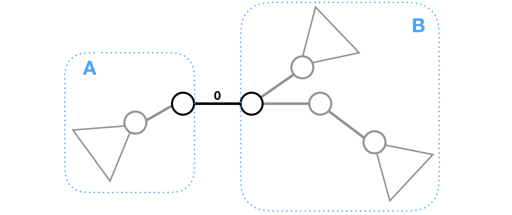
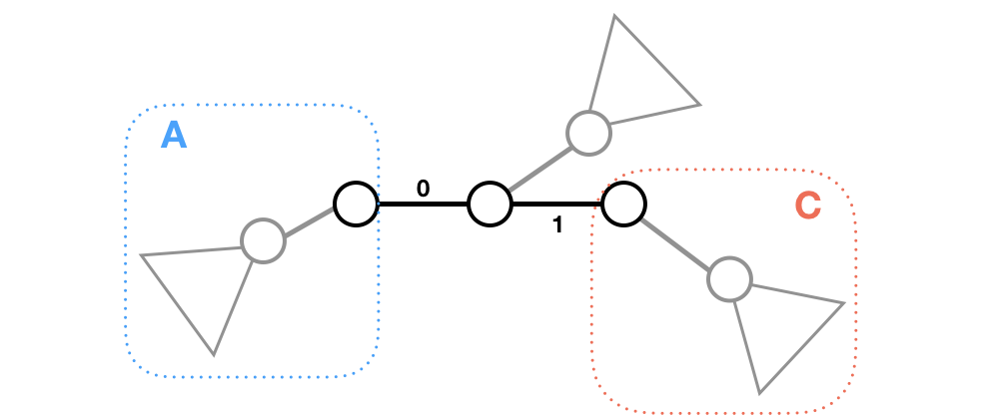
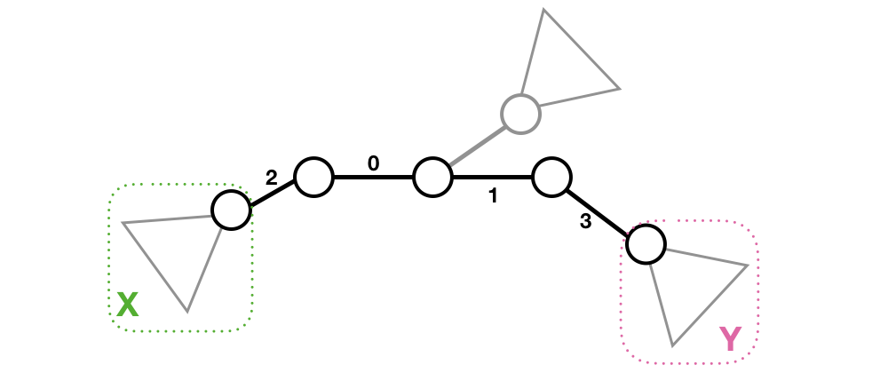

[CF1292C] Xenon's Attack on the Gangs
Solution
这种询问 $\sum\limits_{1\leq u<v\leq n}(…)$ 的题目一般都是考虑边的贡献吧……
考虑边权为 $0$ 的边：不经过它的路径的 $mex$ 一定为 $0$，而经过它的路径的 $mex$ 至少为 $1$. 也就是说，这条边把树分成了两部分 $A,B$，它的贡献至少是 $size_A\times size_B$，我们答案里先加上 $size_A\times size_B$. 如下图1所示。
然后考虑边权为 $1$ 的边，显然应该把它放在 $0$ 的旁边（否则，$0,1$ 之间的点对没有贡献，$0,1$ 外侧有贡献的点对还少了），那么 $0,1$ “外侧”形成两部分 $A,C$（如下图2所示），答案加上 $size_A\times size_C$.
以此类推，$0,1,2,\cdots$ 一定是连续地在一条路径上（如下图3所示），答案不断加上这条路径的“外侧”两部分的大小乘积。
  
也就是说，对于某一条从 $u$ 到 $v$ 长度为 $l$ 的路径，其最大值是唯一的——只需要以某种从中心往两侧扩散的方式在路径上依次放上 $0\sim l-1$，其余边随意即可。
设 $dp[u][v]$ 是在点 $u,v$ 之间放上 $0\sim l-1$ 的最大值， $fa[i][j]$ 是 $i$ 为根时 $j$ 的父亲，$sz[i][j]$ 是 $i$ 为根时 $j$ 的子树大小，考虑转移：
- $u,v$ 路径可以由 $v$ 为根时 $u$ 的父亲（即 $u$ 内侧的点）和 $v$ 转移而来，故 $dp[u][v]=dp[fa[v][u]]+sz[v][u]\cdot sz[u][v]$.
- $u,v$ 路径也可以由 $u$ 为根时 $v$ 的父亲（即 $v$ 内侧的点）和 $u$ 转移而来，故 $dp[u][v]=dp[fa[u][v]]+sz[u][v]*sz[v][u]$.
综上，$dp$ 转移方程为：$dp[u][v]=\max(dp[fa[u][v]][u], dp[fa[v][u]][v]) + sz[u][v]\cdot sz[v][u]$.
$dp$ 方向本是从内向外的，但是这样不太好写，可以采用记忆化搜索，从外向内搜索，回溯时从内向外更新。
复杂度：$O(n^2)$
Code
1 |
|
[CF1292C] Xenon's Attack on the Gangs
http://xyfjason.github.io/blog-xcpc/2020/02/11/CF1292C-Xenon-s-Attack-on-the-Gangs/